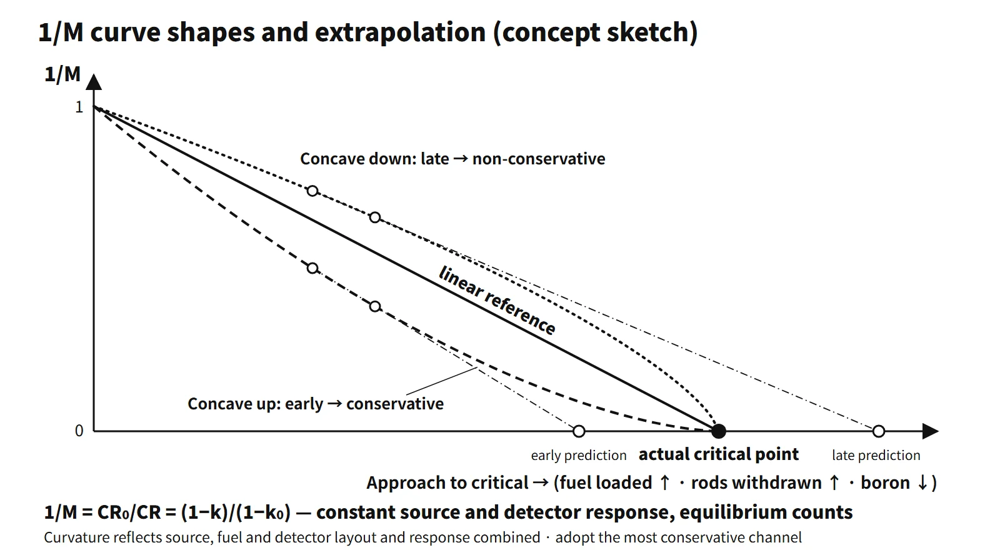

Reactor Physics & Kinetics · C-RX-027
Subcritical Multiplication and the Inverse Multiplication Plot (1/M) — Every Doubling of the Count Rate Halves the Distance to Criticality
How source-range count rates predict the critical point before it is reached, and why each doubling of the count rate halves the remaining margin.
Subcritical multiplication is the build-up of source neutrons through fission chains in a core with k < 1 until a steady count rate CR = ε·S/(1−k) is reached; the multiplication factor is M = 1/(1−k). The inverse multiplication plot (1/M) graphs 1/M = CR₀/CR against boron concentration, control rod position or number of loaded assemblies, and the point where a straight-line extrapolation reaches zero is the predicted critical point.
Principle and mechanism
A series that adds a factor k each generation
If a source injects S neutrons every generation, Sk remain in the next generation, then Sk², and so on. The steady-state total is S(1 + k + k² + …) = S/(1−k). With a detector efficiency ε (including position and geometry), the count rate is CR = εS/(1−k). If the source and detector stay the same, CR₁(1−k₁) = CR₂(1−k₂) holds between two states, so 1/M normalized to a reference count rate becomes zero at criticality:
1/M = CR₀/CR = (1−k)/(1−k₀)
- Strictly, 1/M is proportional to (1−k). Since ρ = (k−1)/k, 1−k = −ρ/(1−ρ) ≈ −ρ.
- Source strength changes only the level of the count rate, not the critical condition (k = 1).
- Deep subcritical, higher modes mix in, so the measured "source multiplication factor" can differ from keff; the two converge as criticality is approached.
The count-rate doubling rule
With constant source strength and detection efficiency and equilibrium count rates, each doubling of CR halves (1−k). For k₀ = 0.95 and CR₀ = 30 cps:
| CR (cps) | k | 1−k | ρ (pcm) | 1/M |
|---|---|---|---|---|
| 30 | 0.9500 | 0.0500 | −5,263 | 1.000 |
| 60 | 0.9750 | 0.0250 | −2,564 | 0.500 |
| 120 | 0.9875 | 0.0125 | −1,266 | 0.250 |
| 240 | 0.9938 | 0.00625 | −629 | 0.125 |
| 480 | 0.9969 | 0.003125 | −313 | 0.063 |
The reactivity added per doubling is 2,699 → 1,298 → 637 → 316 pcm, about half the remaining margin each time. Near criticality the count rate jumps more for the same reactivity, so steps are made smaller. A multiple-choice option saying "each doubling leaves one quarter of the margin" is wrong.
Worked 1/M extrapolation
Hypothetical teaching conditions: critical boron 1,000 ppm, constant boron worth −10 pcm/ppm, 30 cps at 1,500 ppm, approach by dilution.
| Boron (ppm) | ρ (pcm) | CR (cps) | 1/M | Extrapolation from previous point |
|---|---|---|---|---|
| 1,500 | −5,000 | 30.0 | 1.000 | — |
| 1,400 | −4,000 | 37.1 | 0.808 | 980 ppm |
| 1,300 | −3,000 | 49.0 | 0.612 | 988 ppm |
| 1,200 | −2,000 | 72.9 | 0.412 | 994 ppm |
| 1,100 | −1,000 | 144.3 | 0.208 | 998 ppm |
| 1,050 | −500 | 287.1 | 0.104 | 999.5 ppm |
Even in the point model 1/M is not exactly proportional to ρ, so the curve bends slightly. Early extrapolations predict a lower concentration than the true one (slightly non-conservative), but they converge to 1,000 ppm as the approach proceeds.
![Graph of normalized inverse multiplication CR0 over CR from 1.0 to 0 against boron concentration from 1,500 to 1,000 ppm, with calculated points at 30, 37, 49, 73, 144 and 287 cps and pale dashed lines through successive pairs of points; a zoomed scale shows the extrapolated intercepts 980, 988, 994, 998 and 999.5 ppm converging on the model critical point at 1,000 ppm from below; a side table, the count-rate doubling ladder for k0 equal to 0.95, lists 30, 60, 120, 240 and 480 cps with 1 minus k of 0.05, 0.025, 0.0125, 0.00625 and 0.003125 and reactivities of minus 5,263, minus 2,564, minus 1,266, minus 629 and minus 313 pcm; a photo-style illustration shows an ex-core source-range detector](../../assets/images/concepts/c-rx-027-subcritical-multiplication-1m/fig1-inverse-multiplication.webp)
Why the curve bends
- Detector position (spatial effects): loading fuel or withdrawing rods near the detector raises the local flux first, so 1/M falls quickly at first (concave up). The extrapolation predicts criticality early, which is conservative. Far from the detector the curve is concave down and predicts late, which is non-conservative. The curvature, however, depends on the relative layout of source, fuel and detector and on the flux distribution together, so position alone should not be taken as decisive.
- Non-linearity of the control variable: integral control rod worth is an S-shaped curve, and assembly worth differs by location.
- Not waiting for equilibrium: in the one-group approximation the equilibrium time constant is τ ≈ (β−ρ)/(λ|ρ|): 14 s at −5,000 pcm, 53 s at −200 pcm and 175 s at −50 pcm (β = 0.0065, λ = 0.08 s⁻¹). Counting too early reads 1/M too high, which is non-conservative.
So two or more source-range (SR) channels are plotted together and the most conservative prediction is followed. The next step is limited to a fraction of the remaining predicted amount (by practice, half or less).
Worked example: one-group point kinetics with a source
Symbols: C (precursors), S (source), n₀, ρ₀, δρ and n.
- Equations: dn/dt = [(ρ−β)/Λ]n + λC + S, dC/dt = (β/Λ)n − λC
- Steady state (ρ₀ < 0): substituting λC₀ = βn₀/Λ gives S = −ρ₀n₀/Λ
- New steady state after inserting δρ (ρ₀ + δρ < 0): n = n₀·ρ₀/(ρ₀+δρ); for δρ ≪ |ρ₀|, n ≈ n₀(1 + δρ/|ρ₀|)
- Example: ρ₀ = −0.02, δρ = +0.005 → n = 1.33n₀. Substituting Λ = ℓ/k gives n = Sℓ/(1−k), the same form as M.
What it means in a plant
Confirming criticality safety during fuel loading
- Preconditions: confirm the refueling boron concentration to guarantee keff ≤ 0.95 (W STS LCO 3.9.1); isolate unborated water sources (3.9.2); have two SR channels operable, one with an audible count rate in the control room (3.9.3); check the SR source response within 8–12 hours before loading; ensure emergency boration capability and continuous communication.
- During loading: load in an order such that the worth of each added assembly decreases as the core grows. Plot 1/M at each step with a set counting time, and measure boron concentration at a frequency matched to the worst-case dilution capability. For an initial core, 1/M is plotted for every assembly. For a reload, whose aim is to keep keff ≤ 0.95, the focus is on watching for sudden count-rate increases and verifying the core configuration.
- Stop criteria: stop if any of the following occurs: unexpected multiplication behaviour (count-rate jump), loss of communication, an SR detector inoperable, or emergency boration unavailable.
ECP and early criticality at startup
The ECP (estimated critical position) is obtained from the last critical condition, corrected for xenon and samarium, temperature, power defect, burnup and boron changes. Rods are withdrawn in steps in the prescribed sequence, and the 1/M predictions are compared with the ECP. Measured core reactivity must be within ±1 %Δk/k of the prediction (SR 3.1.2).
- Causes of early criticality: ECP input errors (xenon, boron, power history), boron sampling errors or unintended dilution, dilution and withdrawal at the same time, not plotting or misreading 1/M, excessive withdrawal steps, and lapses in supervision or procedure compliance. Cases reported in the United States include V.C. Summer (1985), Palo Verde 1 (1988) and Wolf Creek 1 (1995, where criticality about 1,000 pcm earlier than the ECP was recognized in advance from the 1/M plot).
- Design measures: SR high-flux trip, startup-rate alarm and rod-withdrawal block, interlocks on withdrawal speed and bank sequence, boron dilution alarm, insertion-limit alarm.
- Operational measures: independent verification of the ECP, no simultaneous dilution and withdrawal, 1/M hold points at each step, rod insertion and cause evaluation when outside the band, startup rate of 1 dpm or less, and a reactivity management programme (WANO/INPO SOER 2007-1).
Neutron source rods
- Function: provide a count rate the SR channels can read, preventing a "blind" startup, and make it possible to observe multiplication and confirm channel response.
- Primary sources: emit neutrons by themselves: Cf-252 (spontaneous fission, T½ 2.65 years), Pu-Be and Am-Be ((α,n)); essential for an initial core.
- Secondary sources: Sb–Be. Sb-123 becomes Sb-124 (T½ 60.2 days) in the reactor, and its 1.69 MeV gamma induces Be-9(γ,n) (threshold about 1.67 MeV). They are recharged during operation.
- Operating without source rods: possible if the intrinsic source of irradiated fuel (spontaneous fission of Cm-242 and Cm-244 etc.) ensures the minimum count rate. RG 1.68 specifies at least 1/2 cps before startup with a signal-to-noise ratio above 2. This must be demonstrated by analysis and measurement, and it is unfavourable for initial cores and after long shutdowns.
Regulatory and design criteria
For example, in the United States:
- RG 1.68 Rev. 4 (2013): Appendix A-3 (initial criticality) requires SR ≥ 1/2 cps, S/N > 2, rod withdrawal before dilution, and no period shorter than 30 s. Appendix C-2 (loading procedures) is the source of the loading conditions and stop criteria above.
- W STS (NUREG-1431): LCO 3.9.1 boron concentration, 3.9.2 unborated water source isolation, 3.9.3 nuclear instrumentation, SR 3.1.2 core reactivity. 10 CFR 50 Appendix A GDC 26–28 and 10 CFR 50.68 (criticality prevention in handling and storage) also apply.
- Current edition: RG 1.68 Rev. 4 (2013) is current; the physics and procedural principles are unchanged.
Easily confused pairs
| Subcritical multiplication M | Inverse multiplication 1/M | Shutdown margin SDM | Startup rate SUR | |
|---|---|---|---|---|
| Formula | 1/(1−k) | CR₀/CR | Reactivity to criticality | 26.06/T (dpm) |
| Measurement | Count-rate ratio | Count-rate ratio | Calculation (+ ECC check) | Rate of change of count rate |
| Use | Level of subcriticality | Predicting the critical point | Shutdown safety margin | Rate of rise after criticality |
Key points at a glance
- Definition: in a core with k < 1, source neutrons multiply through chains to a steady count rate.
- Equations: M = 1/(1−k), CR = εS/(1−k), CR₁(1−k₁) = CR₂(1−k₂).
- 1/M: CR₀/CR = (1−k)/(1−k₀) → zero at criticality.
- Extrapolation: plot against boron, rod position or loaded amount; the zero of the straight-line extrapolation is the predicted critical point.
- Doubling rule: CR × 2 → (1−k) halved; reduce step size.
- Curvature: detector close (concave up) is conservative; far (concave down) is non-conservative.
- Waiting for equilibrium: τ ≈ (β−ρ)/(λ|ρ|), longer nearer criticality.
- Loading: boron for keff ≤ 0.95, two SR channels with audible count, stop on abnormal multiplication.
- Startup: compare with the ECP, ±1 %Δk/k, startup-rate limits, prevent early criticality.
- Sources: primary Cf-252, secondary Sb–Be; ensure the minimum count rate.
